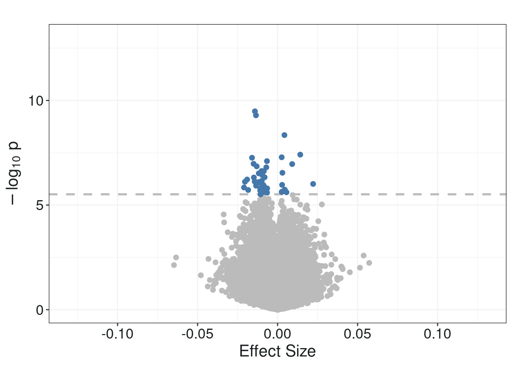

Significant CpGs
Multiple testing correction - FDR and Bonf
padj_fdr <- p.adjust(pval, method="fdr")
limma_base <- data.frame(cpg = rownames(fit$coefficients),
beta = coef, SE = se,
p = pval, padj_fdr = padj_fdr,
t = tstat, N = n)Look at top CpGs
top_cpgs <- limma_base %>%
filter(padj_fdr <= 0.05) %>%
arrange(padj_fdr)
print(paste0("There are ",
nrow(top_cpgs), " significant CpGs"))## [1] "There are 48 significant CpGs"print(paste0(nrow(top_cpgs %>% filter(beta<0)),
" of these are hypomethylated, and ",
nrow(top_cpgs %>% filter(beta>0)),
" are hypermethylated."))## [1] "37 of these are hypomethylated, and 11 are hypermethylated."sig_df <- top_cpgs
if(nrow(sig_df) >= 1){
sig_limit <- max(sig_df$p)
} else {
sig_limit <- 10E-07
}
min <- as.numeric(min(
abs(limma_base$beta),
na.rm=TRUE))
max <- as.numeric(max(
abs(limma_base$beta),
na.rm=TRUE))
p_max <- as.numeric(-log10(min(limma_base$p, na.rm=TRUE))) + 2
min## [1] 3.971036e-10## [1] 0.06476397## [1] 11.48091plot <- limma_base %>%
ggplot(aes(
x = beta,
y = -log10(p)
)) +
geom_hline(
yintercept = -log10(sig_limit),
linetype = "dashed",
linewidth = 1,
color = "#BBBBBB"
) +
xlim(-0.13, 0.13) +
ylim(0,13) +
geom_point(
color = ifelse(limma_base$p > sig_limit,
"#BBBBBB", ifelse(
abs(limma_base$beta) >= 0.05, "#4477AA", '#4477AA')),
size = ifelse(limma_base$p > sig_limit,
2, ifelse(
abs(limma_base$beta) >= 0.05, 2, 2)),
) +
ggtitle("") +
ylab(bquote(-log[10]~"p")) +
xlab("Effect Size") +
theme(
axis.text = element_text(
size=14,
color="#1B2021"),
axis.title = element_text(
size=16,
hjust=0.5,
color="#1B2021"),
panel.background = element_rect(
fill="white"),
panel.border = element_rect(
color="#1B2021",
fill=NA),
panel.grid.major = element_line(
color="grey95"),
panel.grid.minor = element_line(
color="grey95"),
plot.background = element_rect(
fill="white"))
print(plot)